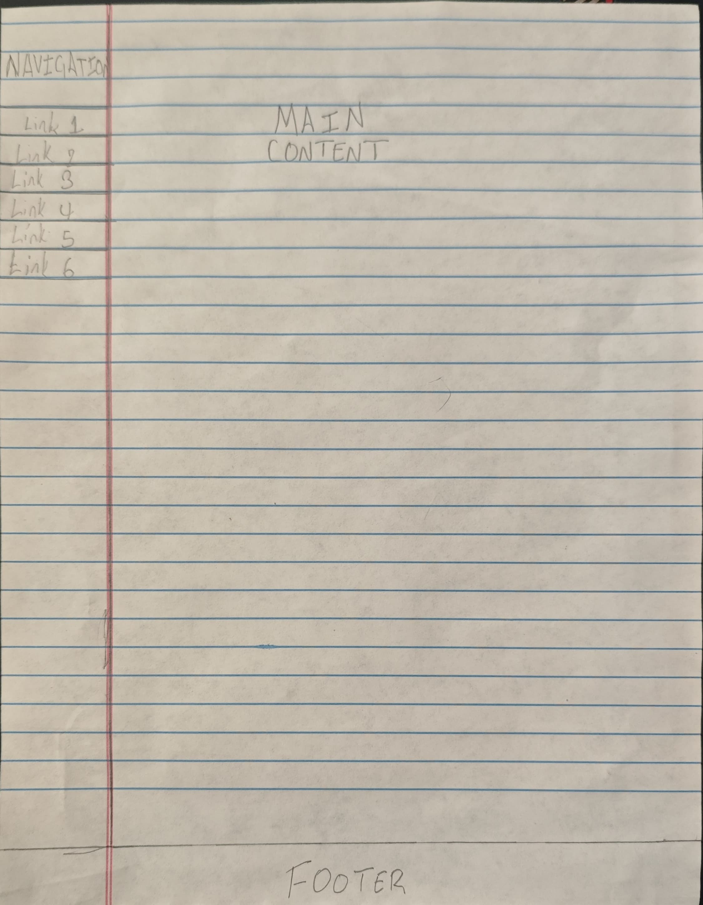
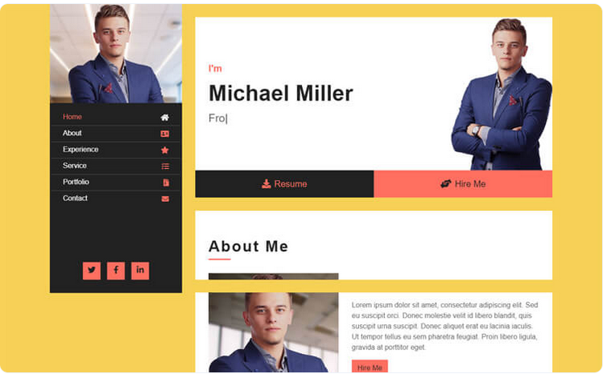

Wireframe

List of webapges
Index
- A home page that displays introductory information on the stuent.
Professional Page
- A webpage dedicated to illustrating the professional character of the student.
Personality Page
- A webpage conisisting of information to help the view understand the type of personality the student might have and a small insight on their behaviour and like-ism
Personal Development Page
- This webpage contains a few key concepts on improving ones lifesyle and skills acquired by the student while pursuing their degree.
Storyboard Page
- A rundown/ draft ideas for the website and the steps it went through before becoming a published website.
Reference Page
- Webpage citing all the cititions and external websites used in the making of this website.
Theme

I chose this theme as an inspo because of its bright, friendly colour and simple modern design. It seems like a website i would make to atract employers.
Features to be used on the website
- Hyperlinks
- Iframes
- Tables
- Lists
- Images
- Navigation Links